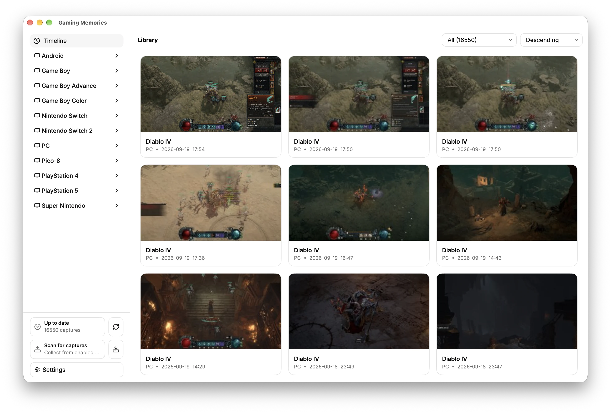
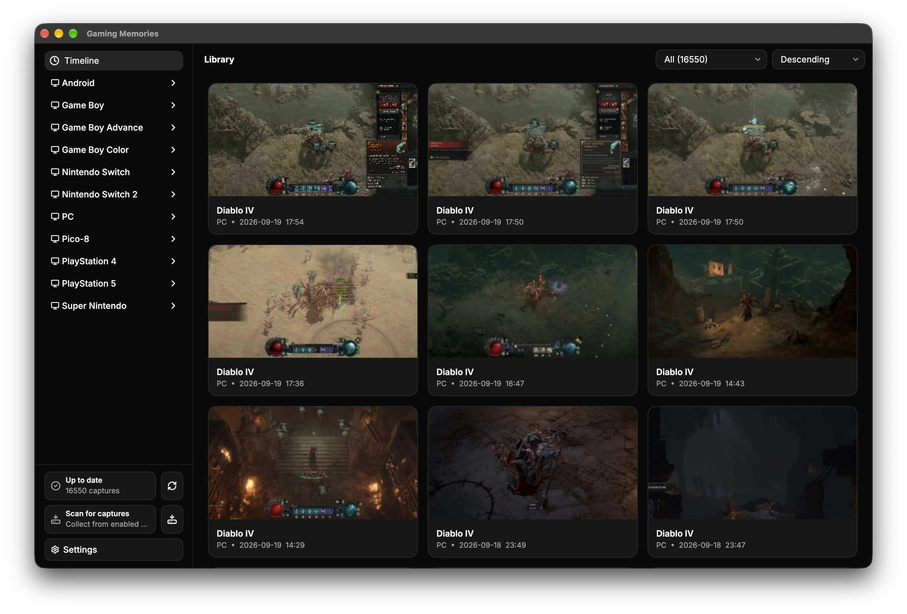
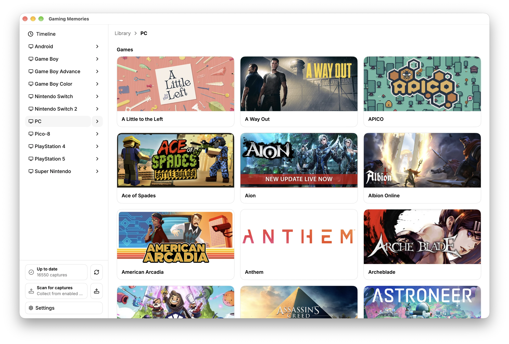
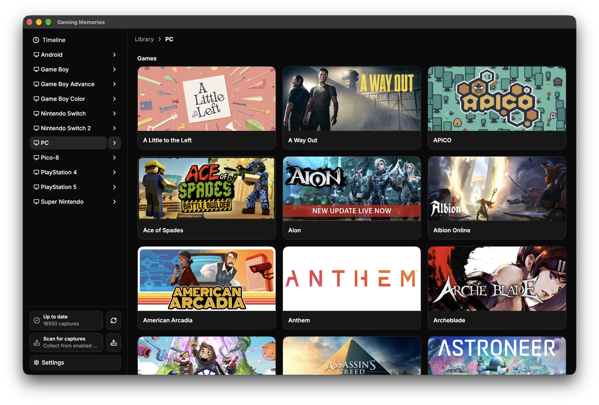
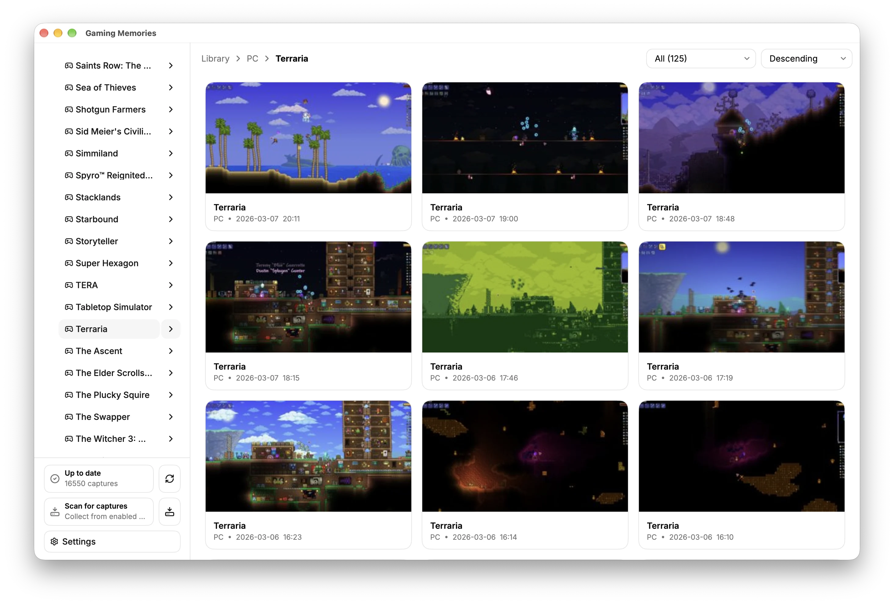
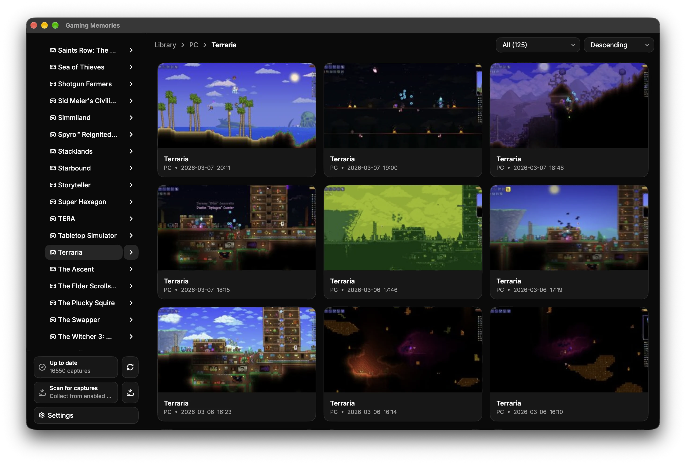
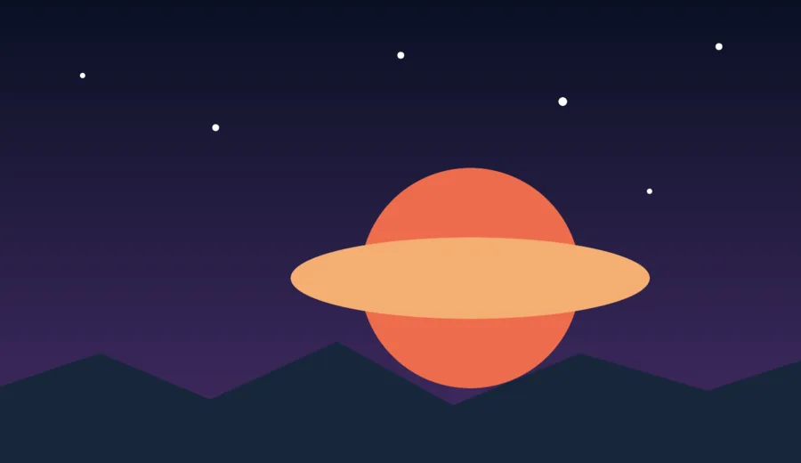

Free and open source
Your game captures.
One calm place.
Collect screenshots and clips from your games and consoles. Browse every memory in one private desktop library.
For Windows, macOS, and Linux






Simple on purpose
Your captures are the focus.
◷
One timeline
See every capture by date. Keep each game and platform label close.

No Man’s Sky12 Sep
⌕
A clear view
Open an image or clip. Zoom, pan, play, copy, or reveal the file.
✓
Local and private
Your library stays on your computer. No account or cloud service is required.
Stored locallyYou control the folder
Quick setup
Choose. Connect. Scan.
Pick a library folder. Enable your sources. Start a scan when you want new captures.
Open the setup guide →
- 1
Choose a library folderUse any folder on your computer.
- 2
Enable your sourcesUse automatic or custom paths.
- 3
Scan for capturesThe app adds only new media.
Capture sources
Bring your platforms together.
Battle.netSteamPlayStation 4PlayStation 5Nintendo Switch 2HytaleMinecraftGuild Wars 2
Use local folders, console exports, an optional Steam gallery, or direct Nintendo Switch 2 USB access on Linux.
Ready when you are
Start your library.
Get the newest release for your desktop.